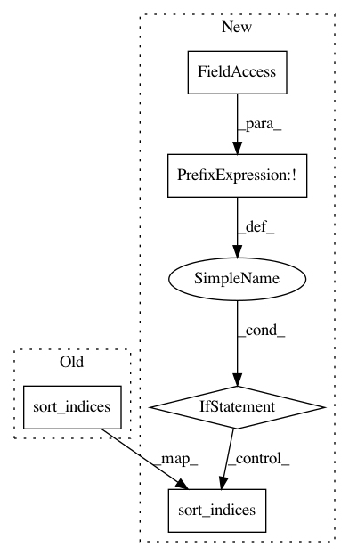

c89f4eacf03534107e9710c6d618e21790ef969e,lightning/datasets/samples_generator.py,,make_nn_regression,#,47
Before Change
X_test.sort_indices()
else:
X_train, y_train = X, y
X_train.sort_indices()
X_test, y_test = None, None
// Add noise
if noise > 0.0:
After Change
X_test.sort_indices()
else:
X_train, y_train = X, y
if not dense:
X_train.sort_indices()
X_test, y_test = None, None
// Add noise
if noise > 0.0:
In pattern: SUPERPATTERN
Frequency: 3
Non-data size: 5
Instances
Project Name: scikit-learn-contrib/lightning
Commit Name: c89f4eacf03534107e9710c6d618e21790ef969e
Time: 2013-08-15
Author: mathieu@mblondel.org
File Name: lightning/datasets/samples_generator.py
Class Name:
Method Name: make_nn_regression